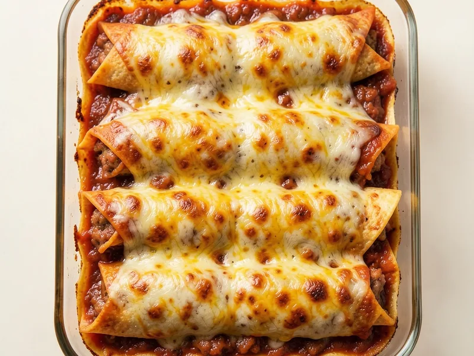

Tender corn tortillas stuffed with savory meat and melted Monterey Jack, blanketed in rich chili con queso and baked until golden and bubbling.
Estimated from USDA data assuming seasoned ground beef filling; values will vary based on filling choice and chili con queso brand. · Per serving (based on 6 servings)
Moisture loss from the meat filling and slight evaporation from the queso sauce during baking reduces total weight by approximately 12–15%.
By Matthew
← All Recipes